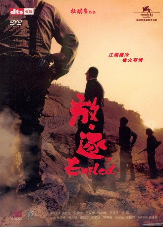
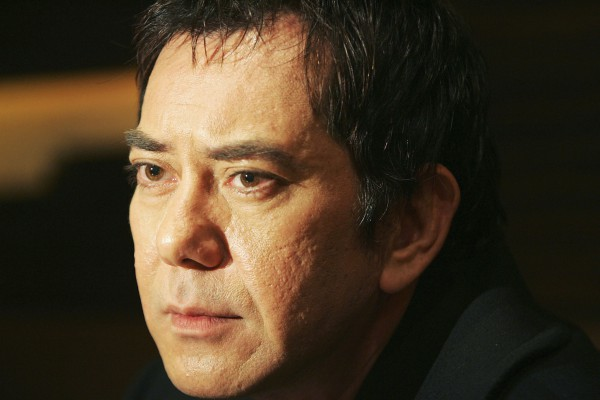
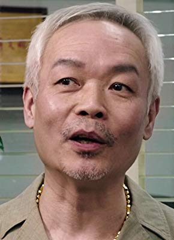
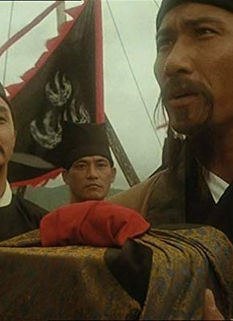

#11203 Exiled
 
 IMDB-Wertung: 7.3 / 10
IMDB-Wertung: 7.3 / 10  Metascore: 73
Metascore: 73 
Gangster Wo aus Hongkong ist mit Kind und Kegel nach Macao ausgewandert, teils um den neuen Machthabern zu entgehen, teils weil ihm daheim der Triadenboss Fay nach dem Leben trachtet. Als Fay erfährt, dass Wo in Macao sitzt, schickt er ihm die Killer Blaze und Fat hinterher. Blaze war früher ein guter Freund von Wo, weshalb sich seine Begeisterung für den Auftrag in Grenzen hält. Lieber würden er und seine Kumpels jene Tonne Gold abgreifen, die korrupte Politiker gerade nach Macao schaffen.
Jahr: 2006
Dauer: 108 Minuten
FSK: 18
Land: Hong-Kong Studio: Kinowelt Home EntertainmentTonspuren:
Untertitel: Deutsch,
Auflösung: 1080p (1920x816) Größe: 9072 MB
Genre: Action, Thriller, Krimi
Regisseur: Johnnie To
Drehbuch: Kam-Yuen Szeto, Tin-Shing Yip
Soundtrack: Dave Klotz, Guy Zerafa
Darsteller:
-  Anthony Chau-Sang Wong als Blaze
- Francis Ng als Tai
 Simon Yam als Boss Fay
Simon Yam als Boss Fay- Nick Cheung als Wo
- Richie Jen als Sergeant Chen
 Roy Cheung als Cat
Roy Cheung als Cat Josie Ho als Jin
Josie Ho als Jin Suet Lam als Fat
Suet Lam als Fat Ka Tung Lam als Boss Keung
Ka Tung Lam als Boss Keung Siu-Fai Cheung als Jeff
Siu-Fai Cheung als Jeff- Ellen Chan als Hooker
- Bing-Man Tam als Uncle Fortune
 Shiu Hung Hui als Sergeant Shan
Shiu Hung Hui als Sergeant Shan- Ronald Yan als Underground Doctor
-  Wah Wo Wong als Sergeant Shan's driver
- Libby Brien als Jin
 Philip Hersh als Tai
Philip Hersh als Tai- Kon Chung Tam als One of Fay's Men (uncredited)
-  Chi Wai Wong als Blackie (uncredited)
- Jeff Cheung als One of Fay's Men (uncredited)
- Mo-Chan Chik als One of Fay's Men (uncredited)
- Chi-Shing Chiu als Boss Keung's Bodyguard (uncredited)
- Ching Ting Law als Boss Fay's Bodyguard (uncredited)
- Kei-Hei Leung als One of Fay's Men (uncredited)
- Man-Wai Luk als One of Fay's Men (uncredited)
- Pui Chung Tong als One of Fay's Men (uncredited)
Datei: X:\FSK18-Eastern\Exiled (2006, FSK18, 1920x816).mkv seit 15.05.2019
Festplatte: FSK18
 Es gibt insgesamt 102 Filme in der Gruppe 'FSK18-Eastern'
Es gibt insgesamt 102 Filme in der Gruppe 'FSK18-Eastern'